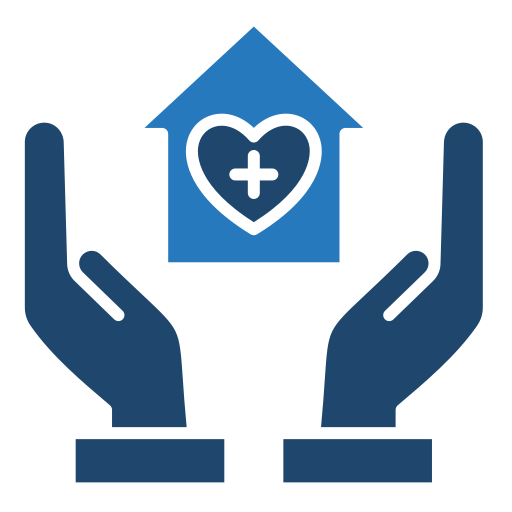

.png)
Domaine Médical
Le blog vous offre les différents spécialisialisations que vous pouvez trouver dans ce plate-forme. En vous décortiquant aussi chacune d'elles afin de faciliter vos selection lors de prise de rendez-vous.
Ceci est un paragraph supplementaire qui vous permettra de mieux digerer les commentaires pour chaque spécialisations, en partant par sa définition jusqu'à l'illustration de sous branches.
Gynécologue
Gynécologie
Le gynécologue s’occupe de la santé reproductive des femmes. Il effectue des examens gynécologiques, prescrit des frottis, traite les infections, conseille sur la contraception et surveille la santé des organes génitaux féminins.
Obstétrique
L’obstétricien se concentre sur la grossesse, l’accouchement et les soins post-partum. Il suit les femmes enceintes, surveille le développement du fœtus et assure un accouchement sûr.
Dermatologue
Un dermatologue est un professionnel de la santé spécialisé dans le diagnostic, le traitement et la prévention des maladies de la peau, des cheveux et des ongles. Voici quelques informations utiles :
- Domaine d’expertise
- Consultations :
- Traitements :

HoméopathieL’homéopathie est une méthode thérapeutique qui aide l’organisme à guérir lorsque la maladie est réversible. Elle s’applique dans les pathologies bénignes du quotidien et rééquilibre l’organisme en profondeur.